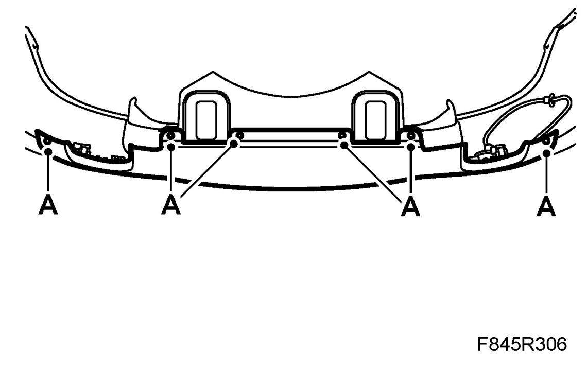
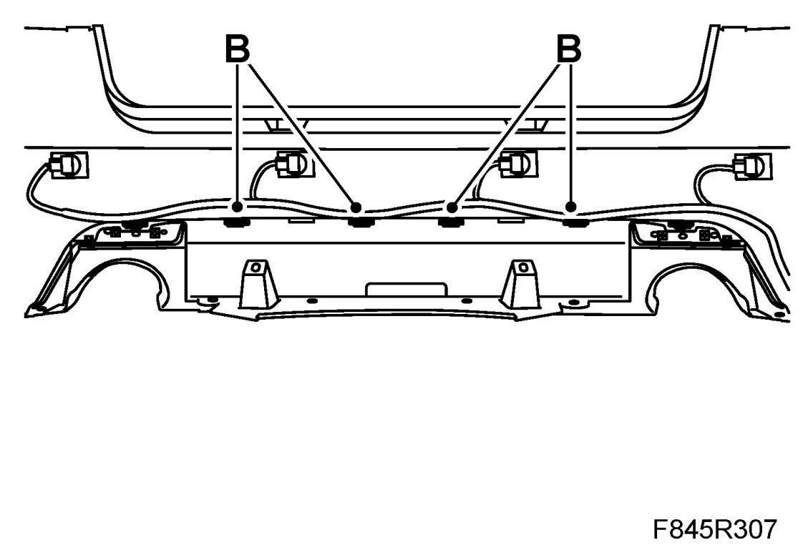
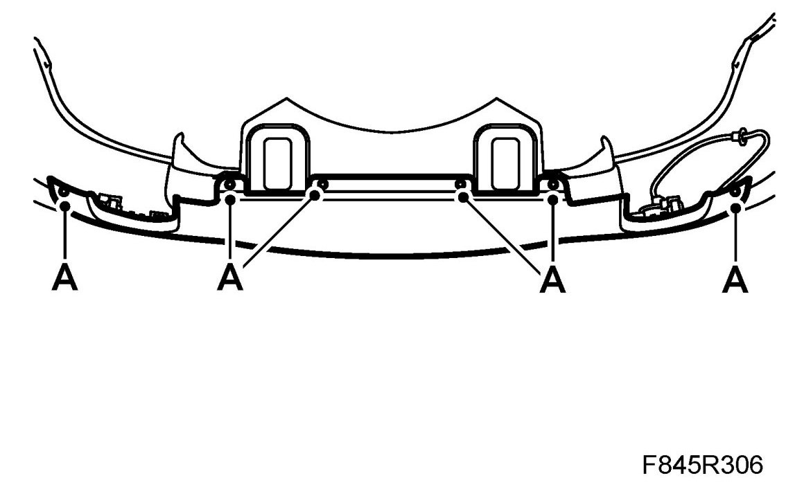

Lower Rear Spoiler, Aero
Lower Rear Spoiler, Aero
To remove
1. Position the car on the lift and raise the car.
2. Remove the Rear bumper shell, 4D, Rear bumper shell, 5D or Rear bumper shell, CV.
3. Remove the rear spoiler.
- Drill out the rivets (A).

- Press in the lock tabs (B) so that they release from the bumper shell.

- Lift away the spoiler.
- Transfer the reflectors to the new spoiler.
To fit
1. Fit the rear spoiler:
- Fit the reflectors.
- Position the spoiler on the bumper and guide in the lock tabs (B).
- Fit the rivets (A).

2. Fit the Rear bumper shell, 4D, Rear bumper shell, 5D, or Rear bumper shell, CV
3. Lower the car.